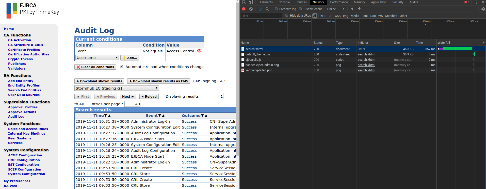

Troubleshoot Database Performance
The following provides information for troubleshooting database performance issues. To view general troubleshooting tips and search for troubleshooting topics, see EJBCA Troubleshooting.
Before starting any database performance troubleshooting, ensure that you have (at least) the recommended database indexes applied. See doc/sql-scripts for recommended indexes.
Enable Performance Statistics in WildFly
To troubleshoot database performance in WildFly, follow the steps below.
The following instructions have been tested with WildFly 14.
Run the following command to list available data sources.
> cd ${WILDFLY_HOME}> ./bin/jboss-cli.sh --connect'/subsystem=datasources:read-resource()'{"outcome"=>"success","result"=> {"data-source"=> {"ejbcads"=> undefined},"xa-data-source"=> undefined}}Make a note of the datasource used by EJBCA as this information is used in the next step. In the example above, the name of the datasource is ejbcads, but it can be different on your system.
Run the following commands to enable performance and SQL logging in Hibernate.
Replace the datasource ejbcads with the name of the datasource you noted down in the previous step.
./bin/jboss-cli.sh --connect'/subsystem=datasources/data-source=ejbcads/statistics=pool:write-attribute(name=statistics-enabled,value=true)'./bin/jboss-cli.sh --connect'/subsystem=datasources/data-source=ejbcads/statistics=jdbc:write-attribute(name=statistics-enabled,value=true)'./bin/jboss-cli.sh --connect'/system-property=hibernate.generate_statistics:add(value=true)'./bin/jboss-cli.sh --connect'/system-property=hibernate.show_sql:add(value=true)'./bin/jboss-cli.sh --connect'/system-property=hibernate.format_sql:add(value=true)'./bin/jboss-cli.sh --connect'/system-property=hibernate.use_sql_comments:add(value=true)'./bin/jboss-cli.sh --connect'/subsystem=logging/logger=org.hibernate.stat:add()'./bin/jboss-cli.sh --connect'/subsystem=logging/logger=org.hibernate.stat:write-attribute(name=level, value=DEBUG)'Run the following commands to enable debugging of EJBCA and CeSeCore.
./bin/jboss-cli.sh --connect'/subsystem=logging/logger=org.ejbca:write-attribute(name=level, value=DEBUG)'./bin/jboss-cli.sh --connect'/subsystem=logging/logger=org.cesecore:write-attribute(name=level, value=DEBUG)'Restart WildFly.
systemctl restart wildflyLoad EJBCA in the browser and tail the log file.
tail -f /opt/jboss/standalone/log/server.logIt may be good to know the load times reported by the browser for reference. Assuming Chromium is used, you can see how much time it takes to load different resources by pressing Ctrl+Shift+I and opening the Network tab as shown in the screenshot below.
Perform some operation known to be slow and capture the output from the log. For example, loading the audit log page would give an output similar to the following:
2019-11-11 14:15:13,553 INFO [stdout] (EJB default - 2) Hibernate: select peerdata0_.id as id1_25_, peerdata0_.connectorState as connecto2_25_, peerdata0_.data as data3_25_, peerdata0_.name as name4_25_, peerdata0_.rowProtection as rowProte5_25_, peerdata0_.rowVersion as rowVersi6_25_, peerdata0_.url as url7_25_ from PeerData peerdata0_2019-11-11 14:15:13,554 DEBUG [org.hibernate.stat.internal.ConcurrentStatisticsImpl] (EJB default - 2) HHH000117: HQL: SELECT a FROM PeerData a, time: 1ms, rows: 22019-11-11 14:15:13,556 INFO [org.hibernate.engine.internal.StatisticalLoggingSessionEventListener] (EJB default - 2) Session Metrics {304609 nanoseconds spent acquiring 1 JDBC connections;41073 nanoseconds spent releasing 1 JDBC connections;343180 nanoseconds spent preparing 1 JDBC statements;290351 nanoseconds spent executing 1 JDBC statements;0 nanoseconds spent executing 0 JDBC batches;0 nanoseconds spent performing 0 L2C puts;0 nanoseconds spent performing 0 L2C hits;0 nanoseconds spent performing 0 L2C misses;0 nanoseconds spent executing 0 flushes (flushing a total of 0 entities and 0 collections);0 nanoseconds spent executing 0 partial-flushes (flushing a total of 0 entities and 0 collections)}2019-11-11 14:15:14,400 INFO [stdout] (EJB default - 10) Hibernate: select accesstree0_.pK as pK1_11_0_, accesstree0_.authorizationTreeUpdateNumber as authoriz2_11_0_, accesstree0_.rowProtection as rowProte3_11_0_, accesstree0_.rowVersion as rowVersi4_11_0_ from AuthorizationTreeUpdateData accesstree0_ where accesstree0_.pK=?2019-11-11 14:15:14,402 INFO [org.hibernate.engine.internal.StatisticalLoggingSessionEventListener] (EJB default - 10) Session Metrics {454643 nanoseconds spent acquiring 1 JDBC connections;81895 nanoseconds spent releasing 1 JDBC connections;519914 nanoseconds spent preparing 1 JDBC statements;433415 nanoseconds spent executing 1 JDBC statements;0 nanoseconds spent executing 0 JDBC batches;0 nanoseconds spent performing 0 L2C puts;0 nanoseconds spent performing 0 L2C hits;0 nanoseconds spent performing 0 L2C misses;0 nanoseconds spent executing 0 flushes (flushing a total of 0 entities and 0 collections);0 nanoseconds spent executing 0 partial-flushes (flushing a total of 0 entities and 0 collections)}2019-11-11 14:15:16,861 INFO [org.cesecore.audit.impl.log4j.Log4jDevice] (default task-17) 2019-11-11 14:15:16+01:00;ACCESS_CONTROL;SUCCESS;ACCESSCONTROL;CORE;CN=SuperAdmin,O=PrimeKey Solutions AB,C=SE;;;;resource0=/administrator;resource1=/secureaudit/auditor/select2019-11-11 14:15:16,862 DEBUG [org.cesecore.audit.log.InternalSecurityEventsLoggerSessionBean] (default task-17) LogDevice: Log4jDevice Proc: 12019-11-11 14:15:16,865 INFO [stdout] (default task-17) Hibernate: insert into AuditRecordData (additionalDetails, authToken, customId, eventStatus, eventType, module, nodeId, rowProtection, rowVersion, searchDetail1, searchDetail2, sequenceNumber, service, timeStamp, pk) values (?, ?, ?, ?, ?, ?, ?, ?, ?, ?, ?, ?, ?, ?, ?)2019-11-11 14:15:16,894 INFO [org.hibernate.engine.internal.StatisticalLoggingSessionEventListener] (default task-17) Session Metrics {711999 nanoseconds spent acquiring 1 JDBC connections;34333 nanoseconds spent releasing 1 JDBC connections;749310 nanoseconds spent preparing 1 JDBC statements;321017 nanoseconds spent executing 1 JDBC statements;0 nanoseconds spent executing 0 JDBC batches;0 nanoseconds spent performing 0 L2C puts;0 nanoseconds spent performing 0 L2C hits;0 nanoseconds spent performing 0 L2C misses;1637963 nanoseconds spent executing 1 flushes (flushing a total of 1 entities and 0 collections);0 nanoseconds spent executing 0 partial-flushes (flushing a total of 0 entities and 0 collections)}You can also use the ping utility in Linux to measure the RTT between the EJBCA machine and the DBMS machine.
> ping <HOST> -c10PING <HOST> (<IP>)56(84) bytes of data.64bytes from <HOST> (<IP>): icmp_seq=1ttl=64time=0.028ms[...]--- <HOST> ping statistics ---10packets transmitted,10received,0% packet loss, time 9193msrtt min/avg/max/mdev =0.052/0.077/0.086/0.013msThis is useful if your database resides on another machine, and you want to determine if the network between the EJBCA machine and the DBMS machine is a bottleneck.
The investigation above shows quite normal values. It took about 350 ms to load the audit log page in Chromium. Of these 350 ms, around 6 ms seconds were spent on doing three queries against the database. Of these 6 ms, about 0.1 ms was incurred by network delays.
Log Database Queries Using MariaDB
If you are using MariaDB, you can enable logging of slow queries, as well as queries not using an index, by running the following commands:
mysql -u root -e "SET GLOBAL slow_query_log=1;"mysql -u root -e "SET GLOBAL slow_query_log_file='/tmp/mariadb-slow.log';"mysql -u root -e "SET GLOBAL long_query_time=1.0;"mysql -u root -e "SET GLOBAL log_queries_not_using_indexes=ON;"The following displays an example of what the log file /tmp/mariadb-slow.log can look like if slow queries are detected:
# Time: 191111 14:32:56# User@Host: ejbca[ejbca] @ [127.0.0.1]# Thread_id: 83 Schema: ejbca QC_hit: No# Query_time: 0.000387 Lock_time: 0.000143 Rows_sent: 2 Rows_examined: 2# Rows_affected: 0SET timestamp=1573479176;select peerdata0_.id as id1_25_, peerdata0_.connectorState as connecto2_25_, peerdata0_.data as data3_25_, peerdata0_.name as name4_25_, peerdata0_.rowProtection as rowProte5_25_, peerdata0_.rowVersion as rowVersi6_25_, peerdata0_.url as url7_25_ from PeerData peerdata0_;For more information, refer to the MariaDB Knowledge Base article Slow Query Log Overview.